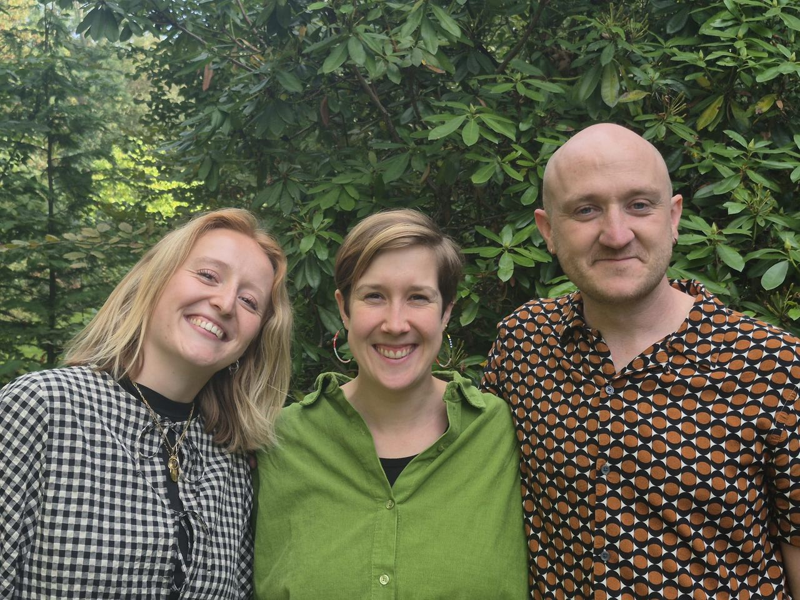

Achter elke procedure schuilt een mens.
NANSEN, the Belgian Refugee Council, is een juridisch expertisecentrum inzake internationale bescherming en staatloosheid. Opgericht in 2017 door advocaten en academici, gevestigd in Brussel.
Missie
NANSEN wil hoogwaardige juridische bijstand ontwikkelen en beschikbaar maken voor mensen die internationale bescherming nodig hebben en mensen die met staatloosheid te maken hebben, en zo bijdragen aan de effectieve bescherming van hun fundamentele rechten.
De nood aan dit werk blijft groot. In 2025 vroegen 34.439 mensen om internationale bescherming in België. Achter elke aanvraag schuilt een mens die een weg moet zoeken in een juridisch en administratief systeem dat moeilijk te begrijpen is, steeds complexer wordt en voortdurend evolueert. Mensen die staatloos zijn, ondervinden vaak andere maar even grote moeilijkheden om hun status vast te stellen, toegang te krijgen tot bescherming en hun rechten uit te oefenen.
We bekijken de situatie van elke persoon grondig, met oog voor zichtbare en minder zichtbare kwetsbaarheden, en hanteren een interdisciplinaire aanpak om de drempels waarmee zij worden geconfronteerd te begrijpen en weg te nemen.
Aanpak
Praktijk, beleid en onderzoek, tegelijk.
We werken op meerdere fronten tegelijk: we nemen individuele dossiers op, ontwikkelen praktische tools en richtlijnen voor praktijkbeoefenaars, analyseren wetgeving en rechtspraak, geven vormingen en intervisies, gaan een constructieve dialoog aan met de asielinstanties en formuleren aanbevelingen voor beleidsmakers.
Die combinatie is bewust gekozen. Wat we leren uit individuele dossiers scherpt onze juridische analyse aan; wat we ontwikkelen via ons themawerk versterkt de ondersteuning voor anderen die met gelijkaardige drempels te maken krijgen.
Drie strategische doelstellingen
De kwaliteit van de juridische bijstand verbeteren
Voor personen die internationale bescherming nodig hebben en voor staatlozen.
Bijdragen aan eerlijke en doeltreffende procedures
Voor internationale bescherming en staatloosheid, via dialoog met de instanties, aanbevelingen en waar nodig strategic litigation.
Een interdisciplinaire aanpak promoten
Juridische expertise verbinden met psychologische, medische, sociale en culturele kennis.
Team
Een klein maar toegewijd team van juristen, in Brussel.

Aan te leveren door NANSEN: namen, functies, foto’s en e-mailadressen van alle teamleden en de raad van bestuur.
Geschiedenis
Waarom NANSEN NANSEN heet.
De organisatie draagt de naam van Fridtjof Nansen (1861–1930), Noors poolreiziger, wetenschapper en diplomaat, en de eerste Hoge Commissaris voor de Vluchtelingen van de Volkenbond.
Na de Eerste Wereldoorlog en de Russische Revolutie stonden honderdduizenden mensen in Europa zonder geldige identiteitspapieren, en vaak zonder nationaliteit. Nansen bedacht voor hen een identiteitsbewijs dat door tientallen staten werd erkend: het Nansenpaspoort. Het was het eerste internationale reisdocument voor vluchtelingen en staatlozen.
De hoed in ons logo verwijst naar hem. Zijn werk raakt nog altijd aan de twee domeinen waarin NANSEN vandaag actief is: internationale bescherming en staatloosheid.
Fridtjof Nansen wordt de eerste Hoge Commissaris voor de Vluchtelingen van de Volkenbond.
Invoering van het Nansenpaspoort. Nansen ontvangt de Nobelprijs voor de Vrede.
Het Verdrag betreffende de status van staatlozen wordt aangenomen.
Advocaten en academici richten NANSEN op in Brussel.
Gert Bruininkx volgt Julie Lejeune op als directeur.
Partners
Niets van dit werk gebeurt alleen.
- UNHCROperationeel partner in België
- MOVE CoalitionDetentiebezoeken en doorverwijzing
- ECREEuropean Council on Refugees and Exiles
- WAWY-netwerkMerhaba, Rainbow Refugee Committee, Vluchtelingenwerk Vlaanderen, Humanitarian Hub
- European Network on StatelessnessStatelessness Index
- Orde van Vlaamse BaliesOnline vormingsmodule
- UCLouvain en UGentOpleiding, gastcolleges, legal clinics
- Umbrella Refugee CommitteeOnderzoeksproject met mensen met eigen ervaring
Met steun van
United Nations Voluntary Fund for Victims of Torture (UNVFVT), Innoviris (Brussels Hoofdstedelijk Gewest), Equal.brussels, en donoren groot en klein.
Aan te leveren: logo’s van partners en financiers, met toestemming voor gebruik.
Jaarverslagen
Elk jaar in het Nederlands, Frans en Engels.
Contact
Dossiers
Voor advocaten die een dossier willen voorleggen. Lees eerst hoe dat werkt.
dossiers@nansenrefugee.beDirectie
Gert Bruininkx, directeur.
E-mailadres volgtAdres
NANSEN vzwRue Émile Féron 153
1060 Brussel